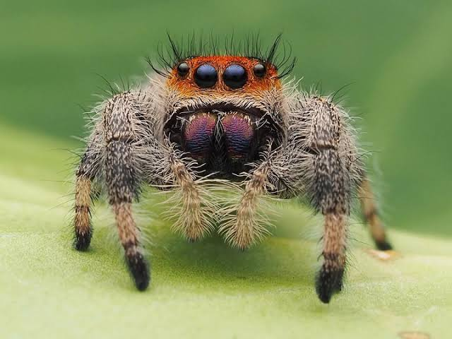

Bem-vindo à Aracpedia!
Uma wiki especializada em aranhas. Aqui você encontrará a maior variedade de espécies e suas curiosidades!
Aranhas em Destaque
Algumas das aranhas mais interessantes do mundo aracnídeo:
Lycosa
(Aranha-de-jardim)
Aranha caçadora terrestre, ativa à noite. Conhecida por sua
velocidade e visão aguçada.

Salticidae
(Aranha-saltadora)
Pequena e curiosa, possui excelente visão e realiza saltos
impressionantes para capturar presas.

Argyroneta
(Aranha-de-água)
Vive em ambientes aquáticos e cria bolhas de ar para respirar
debaixo d'água. Muito rara.
Theraphosa
(Aranha-golias)
A maior aranha do mundo em massa corporal. Apesar do tamanho, é
geralmente tímida.
Nephila
(Aranha-dourada)
Famosa por tecer teias com brilho dourado. Suas teias são
incrivelmente fortes e duráveis.
Latrodectus
(Viúva-negra)
Aranha venenosa e reconhecida pelo ponto vermelho. Perigosa, mas
ataques são raros.
Sobre Mim
Olá! Eu sou o Vitor, criador deste site. Particularmente, gosto muito de aranhas e acho que seria muito legal se mais pessoas pudessem conhecer melhor esse universo.
Contato
Fale com a comigo: